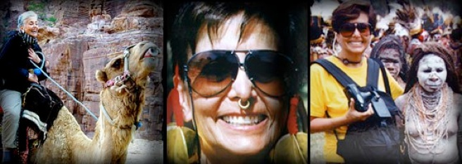

the passionate traveler

Travel is in my genes. My parents were great travelers and shared with me their joy of exploring new places. My childhood mantra was Timbuktu and Kathmandu. I had read about these wondrous places - loved the sound of these rhyming words and the images they evoked. My actual arrival in Kathmandu in 1989 and several years later in Timbuktu were the realization of long-held dreams. The remote corners of the globe continue to beckon me and I have explored Southeast Asia, Central Asia, China, Nepal, India, Papua New Guinea, Indonesia, Africa, Australia, New Zealand and South America. Each of my journeys is preceded by studying the destination; its history, culture, and customs. I want to capture the spirit of cultures that are threatened by extinction through the lense of my camera.
In 1999, my desire to visit India's northern region of Ladakh catapulted my explorations to a new level. I traveled with National Geographic photographer Nevada Wier and developed a passion for creating compelling portraits and a desire to capture the nobility of indigenous people. I continued honing my photographic skills in classes with Nevada, Wendy Walsh and Arthur Meyerson at Santa Fe Photography Workshops and with Julia Dean at her Los Angeles studio. My doctorate in education and great love of travel and photography sparked my interest in the work of renowned photographer, Phil Borges, founder of “Bridges to Understanding”. I strongly support “Bridges” (www.bridgesweb.org), a non-profit dedicated to global understanding and communication fostered by digital photography and online school-based forums. Youngsters from Peru to India can now share their stories and meet face to face through image exchanges on the internet. I have been privileged to contribute to the cause by teaching digital photography to these children.
Exhibitions, Awards, Collections:
-
•2005 - Beverly Hills Public Library:
-
“Everyday Faces in Faraway Places: A Collection of World Images”
-
•2007 - ArcLight Gallery, Hollywood, CA: “Mongolia and India”
-
•2007 - “Mongolian Horsemen II”: First place winner,
-
Los Angeles Digital Imaging Group’s Annual Photo Contest
-
•2009 - The Craft and Folk Art Museum (CAFAM), Los Angeles: “India”
-
•2009 - Rose Café Gallery, Venice, CA: “Faraway in Focus”
-
•2009 - Presentation at The First Mongolian Business Workshop in Southern California
-
•2009 - INNO, West Hollywood
-
•Private, corporate, and university collections

Petra, Jordan 2002
Djenne, Mali 1998
Mt. Hagen, Papua New Guinea 1993
all images & original text © 2010 audrey stein photography
AUDREY STEIN PHOTOGRAPHY